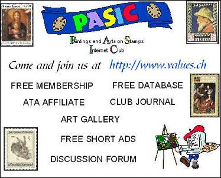
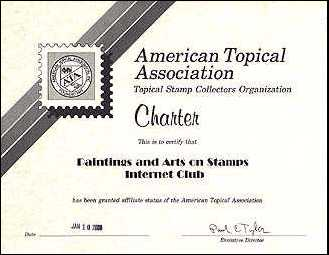

The Internet Journal of PASIC, the
Paintings and Arts on Stamps Internet Club.
19th Year, 33th Edition: October 2015A message from the President
Dear PASIC members, In December 2015, PASIC, one of the largest and the oldest philatelic clubs on the Internet, will celebrate its 19th anniversary. Congratulations to all our members!
Here a comment that we got recently: "For years I have been visiting your excellent Web site enjoying to read nice articles. The site has become for me a valuable source of collecting many art on stamps information. Having been a Club Member I got an opportynity to contact many people around the world with common interest. Please keep up the good work!".
Our member from the USA, Roy Berliner, added over 2600 new records to our Art on Stamps database, in MS Excel format (Menu-> Resources -> Download Free Databases). For more information about these databases please click here. As of May 2010 the database listed over 30,000 stamps and 3,200 miniature sheets.
A Happy Art on Stamps collecting,
Victor Manta
PASIC President and Founder, PWO
PASIC, one of the oldest and biggest philatelic clubs on the Web, continues its steady grow and counts at time:
**** 947 members from 87 countries ****
Our 947th member is Mr. Luis Belard la Fonseca from Portugal!
We welcome all new members and we wish them a good time among us, and also many interesting contacts with other members of our community!
The country with the biggest number of PASIC members continues to be the USA. It is numerically followed by Romania, Canada, China, India, Israel, Philippines and France.
|  We would like to bring to your attention a handout created for an ATA show by our PASIC staff member, Helen Fowler, from the USA. Thank you, Helen, we love it! |
In 1999 PASIC applied, through its President, for its affiliation with the American Topical Association (ATA), the biggest and over 50 year old association, that successfully promotes the topical philately in the whole word. By the decision of the ATA's Board of Directors, PASIC was granted on Jan. 10, 2000 the affiliate status of the ATA. Please see below the (reduced) the Charter, that was signed by Mr. Paul E. Taylor, ATA Executive Director.
|
|
 |
|

Paintings and Arts on Stamps Internet Club is an Affiliated Member of the American Topical Association.
The Paintings and Arts on Stamps Database Project
In order to better helping all Internet fans of Art Stamps, the PASIC President (being also the author of the Arts on Stamps database, downloadable from this site) started with some PASIC members a new project called The Paintings and Arts on Stamps Database Project (PASDP). It was started at the beginning of the year 2000, with the explicit goal of improving the database. The purpose is the completing of the database with the names of all artists whose masterpieces are displayed on stamps (a big work!) and then the offering of the a querying (searching after desired criteria) of the mentioned database. This way stamp collectors can filter-out the issues of interest, in order to know what exists in their field and then to look into catalogues for more information. We don't replace the catalogues, but only add what they are missing, i.e. a search & select function for all known art stamps of the world. For more information please consult the Download DB page (Free Huge Database in the Menu).
The work on PASDP has been started at time and several updates of the database, in its new format, were already uploaded to the artonstamps.org server.
A new database project was started in 2001 and has already some very interesting results, thanks to our members Roy Berliner from the USA. You can also browse our database on-line. Give it a try!Pages of PASIC Members
We publish some pages written by our members. The page of Francis Kolarits from the USA challenge us with an interesting Art Trivia. The pages of Dr. Claude Wainstain from France tell us (in English, but also in his mother tongue) who was Laszlo Moholy-Nagy, and also the amazing story of a masterpiece painted by Renoir and hated by his model. The page of Danish stamp collectors George Kringelbach and of Avram Rudaizky (pen names of Ann-Mette Heindorff) presents the Gonzaga - Cycle of the Italian painter Tintoretto and shows the particularity of artist's style. Victor Manta, the author of this site, tells the history of Romanian "shot", and then overprinted paintings stamps.
Wrong E-mail Addresses of Some PASIC Members
Several PASIC members could not be reached by my last newsletters. I ask them all to re-join our club by sending me by e-mail a message that includes their name and their new e-mail addresses (take out "spaam" from my address). Because it is a lifetime membership, all records will be maintained in the database, but for members who could not be reached, the e-mail address field will be eventually replaced by Not on Line, what will prevents our active members from mailing to nowhere. Please consult the Members List at least two times yearly, and contact us by e-mail if one or more published e-mail address are not valid. The list being so large, we aren't able anymore to check the validity of all e-mail addresses. I would like to thank all PASIC members and all visitors of the Paintings and Arts on Stamps Site for their interest, fidelity and encouragement. I wish you all a Happy Collecting! We encourage all stamps collectors interested in Arts on Stamps to join us at PASIC, in order to make our hobby even more interesting and joyful.
It is a free service of this site. To join us, just click on:
and fill-in the really short registration form.
|
Click the banner to visit the site |